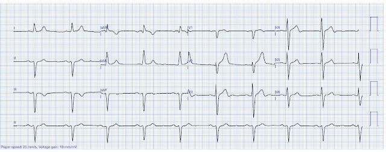
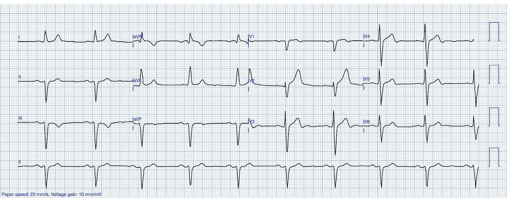
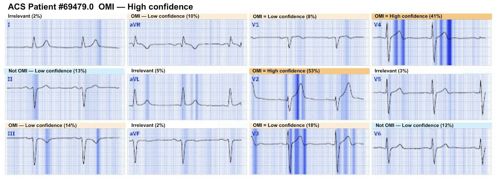
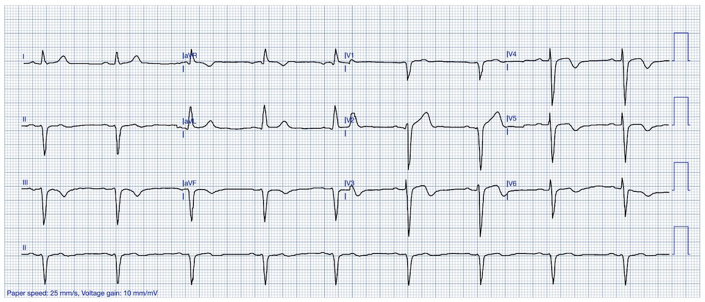
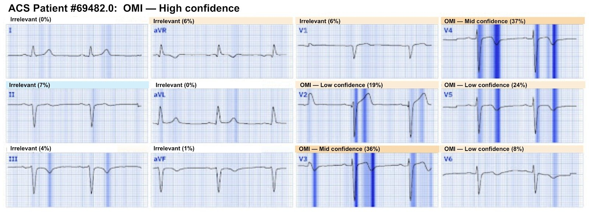
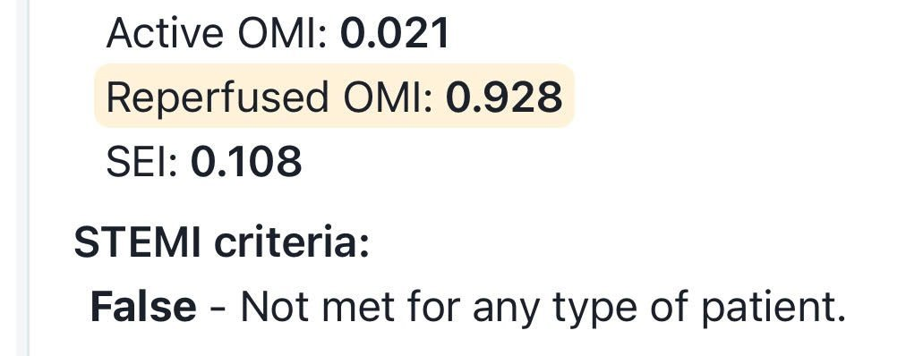
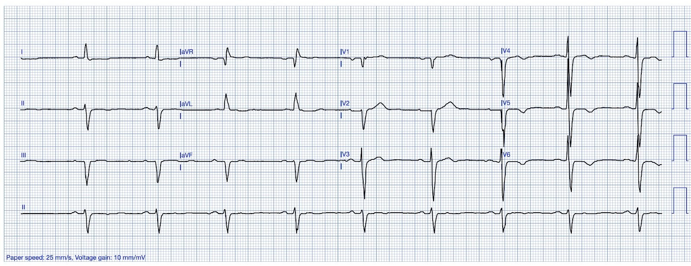
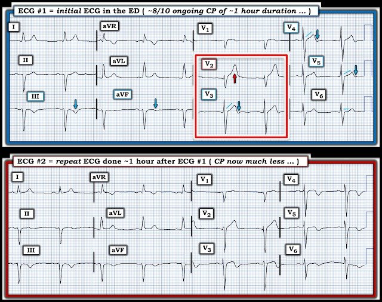

01/08/2025 — Đau ngực 6 ngày sau một nghiệm pháp gắng sức âm tính
Bản dịch tiếng Việt của bài "Chest pain 6 days after a negative stress test" – Dr. Smith’s ECG Blog. Giữ nguyên toàn bộ 7 hình ảnh của bản gốc.


Ca này do Cody Pinnow gửi đến, một bác sĩ nội trú cấp cứu năm thứ 2, người đã học điện tâm đồ từ blog này khi còn làm kỹ thuật viên theo dõi monitor tim, trước khi vào trường y.
Một bệnh nhân hơn 70 tuổi, trước đây khỏe mạnh, đến phòng cấp cứu vì đau ngực âm ỉ sau xương ức 1 giờ, lan lên vai trái. Ông khai không có tiền sử bệnh tim và thực tế đã làm nghiệm pháp gắng sức (không rõ loại) 6 ngày trước, kết quả bình thường. Bác sĩ tim mạch đã kết luận bệnh nhân hoàn toàn khỏe mạnh.
Một điện tâm đồ được ghi lúc 0000, không có bản ghi cũ để so sánh.


Bạn nghĩ gì?
= = =
Điện tâm đồ này được phân loại là “Không phải STEMI” và bệnh nhân được đưa vào phòng. Bác sĩ điều trị nhận ra điện tâm đồ đáng lo ngại cho OMI, rõ nhất là sóng T tối cấp ở V2, ít rõ hơn ở V3 và V4.
Smith: có thể đã có dấu hiệu bắt đầu tái tưới máu: có thể thấy phần cuối sóng T đảo ngược nhẹ ở V3 và V4. Tôi sẽ hỏi bệnh nhân xem cơn đau có đang giảm không.
Nhìn lại, điện tâm đồ được đưa qua Queen, và Queen đồng ý.


Ứng dụng PMcardio for Individuals 3.0 mới nay đã có mô hình Queen of Hearts mới nhất và khả năng giải thích của AI (bản đồ nhiệt màu xanh)! Tải ngay cho iOS hoặc Android. https://www.powerfulmedical.com/pmcardio-individuals/
Khi thăm khám, bệnh nhân vẫn còn đau 8/10. Bệnh nhân được cho liều nạp aspirin và nitroglycerin ngậm dưới lưỡi. Khi cơn đau giảm dần, một điện tâm đồ ghi lại được thực hiện lúc 0058.


V2 có vẻ bớt tối cấp hơn, và nay có phần cuối sóng T đảo ngược ở V3-V5, gợi ý tái tưới máu và phù hợp với bệnh sử triệu chứng ACS đang cải thiện của bệnh nhân.
Queen một lần nữa nhận định đây là OMI với độ tin cậy cao, dù không có bất kỳ thông tin nào về cơn đau của bệnh nhân.


Smith: phiên bản Queen này chẩn đoán “OMI” nếu có OMI “đang diễn ra” (Active) hoặc OMI “đã tái tưới máu” (Reperfused).
Chúng tôi có một thuật toán cập nhật hơn (chưa công khai) phân biệt OMI “đang diễn ra” với OMI “đã tái tưới máu”, và còn chẩn đoán “thiếu máu cục bộ dưới nội tâm mạc (SEI)”
Đây là kết quả của thuật toán này:


= = =
Truyền nitroglycerin tĩnh mạch được bắt đầu và bác sĩ tim mạch can thiệp được gọi. Bác sĩ can thiệp đồng ý có thay đổi động (dynamic), tuy nhiên yêu cầu hội chẩn nhóm tim mạch đang theo dõi bệnh nhân trước khi thông tim, vì nghiệm pháp gắng sức gần đây cho kết quả yên tâm. Cơn đau của bệnh nhân tiếp tục giảm khi dùng nitroglycerin.
Như đã bàn trên blog này trước đây, nghiệm pháp gắng sức thực tế là VÔ DỤNG trong phân tầng nguy cơ đau ngực tại khoa cấp cứu.
Nghiệm pháp gắng sức chưa được chứng minh là phát hiện được các mảng xơ vữa có nguy cơ:
- Smith SW. Jackson E. Hanson K. Bart B. Incidence of MI in ED Chest Pain Patients with a Recent Negative Stress Imaging Test (Tỷ lệ nhồi máu cơ tim ở bệnh nhân đau ngực tại khoa cấp cứu mới có nghiệm pháp gắng sức hình ảnh âm tính). Academic Emergency Medicine 2005; 12(Suppl 5):51.
- Walker J, Galuska M, Vega D. Coronary disease in emergency department chest pain patients with recent negative stress testing (Bệnh mạch vành ở bệnh nhân đau ngực tại khoa cấp cứu mới có nghiệm pháp gắng sức âm tính). West J Emerg Med. 2010 Sep;11(4):384-8. Đính chính trong: West J Emerg Med. 2018 Nov;19(6):1065. doi: 10.5811/westjem.2018.10.41206. PMID: 21079714; PMCID: PMC2967694.
- Meyer MC, Mooney RP, Sekera AK. A critical pathway for patients with acute chest pain and low risk for short-term adverse cardiac events: role of outpatient stress testing (Lộ trình xử trí bệnh nhân đau ngực cấp có nguy cơ thấp bị biến cố tim ngắn hạn: vai trò của nghiệm pháp gắng sức ngoại trú). Annals of emergency medicine. 2006; 47(5):427-35. PMID
- Engineer RS, và cs. Chest pain after recent stress test: Is there a warranty? (Đau ngực sau nghiệm pháp gắng sức gần đây: có “bảo hành” không?)
- Ann Emerg Med 2004;44(4, Supplement):S47.
- Có tại: https://www.sciencedirect.com/science/article/pii/S019606440400876
Nghiệm pháp gắng sức có độ nhạy kém với bệnh mạch vành tắc nghẽn (CAD), thấp tới 45%:
- Froelicher VF, Lehmann KG, Thomas R, và cs. The electrocardiographic exercise test in a population with reduced workup bias: diagnostic performance, computerized interpretation, and multivariable prediction (Nghiệm pháp gắng sức điện tâm đồ ở quần thể giảm sai lệch do quy trình chẩn đoán: hiệu năng chẩn đoán, kết quả đọc bằng máy tính và dự báo đa biến). Veterans Affairs Cooperative Study in Health Services #016 (QUEXTA) Study Group. Quantitative Exercise Testing and Angiography. Ann Intern Med. 1998;128:(12 Pt 1)965-74
Một bài tổng quan xuất sắc về những cạm bẫy và điểm yếu của nghiệm pháp gắng sức từ góc nhìn khoa cấp cứu: https://first10em.com/stress-test-accuracy/
Quay lại ca bệnh:
Bác sĩ tim mạch chính của bệnh nhân khuyên làm troponin để giúp quyết định có thông tim hay không “vì điện tâm đồ ban đầu tương đối không có gì đáng chú ý”. Troponin độ nhạy cao (hs-troponin) đầu tiên trả về 92 (giới hạn trên ở nam 22), điều này thuyết phục các nhóm tim mạch rằng thông tim là phù hợp. Bệnh nhân được bắt đầu heparin và được thông tim (khi đã hết đau) lúc 0400. Kết quả cho thấy bệnh ba nhánh mạch vành nặng, gồm hẹp 50% thân chung động mạch vành trái, hẹp phức tạp ở nhiều đoạn của LAD với hẹp 80% LAD đoạn xa. Không xác định được tổn thương thủ phạm rõ ràng ngay lúc đó.
Troponin đỉnh không được đo.
Bệnh nhân được hội chẩn phẫu thuật tim lồng ngực và đã phẫu thuật bắc cầu chủ vành (CABG) x4 thành công vào ngày hôm sau. Troponin không được theo dõi diễn biến thêm. Diễn tiến nằm viện có biến chứng rung nhĩ và quá tải thể tích, tuy nhiên hiện bệnh nhân đang ổn.
Một điện tâm đồ vài tháng sau để so sánh làm cho các thay đổi tối cấp trên điện tâm đồ đầu tiên của ông rõ ràng hơn.


Smith: bệnh nhân này may mắn đã tái tưới máu trước khi được can thiệp. Bạn không biết bệnh nhân nào sẽ may mắn như vậy — vì thế đừng chờ điều đó xảy ra!!
= = =
======================================
BÌNH LUẬN CỦA TÔI, bởi KEN GRAUER, MD (1/8/2025):
Khi xem lại ca hôm nay trên chiếc ghế thư giãn êm ái trong phòng làm việc tại nhà — tôi nghĩ, “Ma quỷ nằm ở các chi tiết … “.
- Bệnh nhân trong ca hôm nay là một người đàn ông hơn 70 tuổi, trước đây khỏe mạnh, đến ED (khoa cấp cứu) vì “đau ngực (CP) (Chest Pain) âm ỉ sau xương ức 1 giờ, lan lên vai trái”.
- Đáng chú ý, bệnh nhân đã làm nghiệm pháp gắng sức (không rõ loại) 6 ngày trước đó — với kết quả được báo là “bình thường”. Vì vậy ông đã được bác sĩ tim mạch “kết luận hoàn toàn khỏe mạnh”.
= = =
Các “chi tiết” trong bệnh sử này:
Như đã nêu ở phần bàn luận của Dr. Smith phía trên — bác sĩ tim mạch can thiệp đã được gọi đến khám bệnh nhân này, nhưng ngần ngại thông tim bất chấp các thay đổi trên điện tâm đồ vì nghiệm pháp gắng sức “cho kết quả yên tâm”. Là người đã thực hiện và dạy các bác sĩ nội trú cùng các đồng nghiệp bác sĩ gia đình trên toàn quốc cách làm nghiệm pháp gắng sức trong nhiều thập kỷ — tôi xin bổ sung góc nhìn sau đây về việc sử dụng “nghiệm pháp gắng sức”.
- Chi tiết #1: Có nhiều loại “nghiệm pháp gắng sức” khác nhau có thể đã được thực hiện — vì vậy việc ra quyết định rõ ràng sẽ phụ thuộc vào loại nghiệm pháp gắng sức cụ thể đã làm (tức là gắng sức trên thảm lăn — siêu âm tim gắng sức — gắng sức hạt nhân — MRI tim, v.v.).
- Chi tiết #2: Kết quả cụ thể của nghiệm pháp là gì? Ví dụ — nghiệm pháp gắng sức trên thảm lăn có thể “âm tính với thiếu máu cục bộ” — nhưng nếu mức gắng sức đạt được không đủ, bệnh tim đáng kể vẫn có thể hiện diện. Hoặc thể trạng hay các yếu tố khác có thể đã dẫn đến một kết quả “âm tính” nhưng hình ảnh không tối ưu.
- Chi tiết #3: TẠI SAO ngay từ đầu lại chỉ định nghiệm pháp gắng sức, chỉ 6 ngày trước khi bệnh nhân này đến viện vì đau ngực mới khởi phát? Nếu lý do là tiền sử đau thắt ngực — thì tùy theo loại nghiệm pháp gắng sức và kết quả cụ thể của nó — một kết quả “âm tính” có thể chưa loại trừ được nguy cơ bệnh tim tiềm ẩn. Việc đọc các loại nghiệm pháp gắng sức khác nhau có cả “nghệ thuật”, và điều đó có thể (hoặc có thể không) đã được áp dụng tối ưu trong ca hôm nay (Chúng ta đơn giản là không biết điều này từ các chi tiết có được về ca hôm nay).
- Chi tiết #4: Phần lớn các nghiệm pháp gắng sức đánh giá sự hiện diện của hẹp mạch vành gây hạn chế dòng chảy. Nhưng đa số các ca nhồi máu phát sinh từ các chỗ hẹp mạch vành không gây hạn chế dòng chảy (ít nặng hơn) chứa mảng xơ vữa không ổn định, mảng này nứt vỡ và gây tắc mạch vành cấp (Fearson — Circulation: Cardiovasc Interven 4(6): 539-541, 2011). Dù nghiệm pháp gắng sức có thể chỉ ra một số bệnh nhân “có nguy cơ” bị biến cố trong tương lai — nói chung nó sẽ không phát hiện được liệu một mảng xơ vữa có sắp trở nên “không ổn định” hay không.
Các “chi tiết” trên các điện tâm đồ hôm nay:
Để dễ theo dõi, trong Hình 1 — tôi đặt cạnh nhau 2 điện tâm đồ đầu tiên của ca hôm nay.
- Điện tâm đồ ban đầu (bản ghi TRÊN trong Hình 1) — được phân loại lúc triage là “Không phải STEMI”. Tuy nhiên, bác sĩ điều trị đã nhận ra sóng T tối cấp ở chuyển đạo V2 (ít rõ hơn ở các chuyển đạo V3,V4).
- Khoảng một giờ sau — bệnh nhân đã đỡ hơn (đau ngực giảm nhiều sau ASA và NTG ngậm dưới lưỡi, tiếp theo là NTG tĩnh mạch). Một điện tâm đồ ghi lại được thực hiện — và ghi nhận chuyển đạo V2 trông bớt tối cấp hơn, nay có phần cuối sóng T đảo ngược ở các chuyển đạo V3,V4,V5.
- Hướng xử trí: Đến lúc này — khoa Tim mạch khuyên làm Troponin “để giúp quyết định có thông tim hay không” — vì điện tâm đồ ban đầu “tương đối không có gì đáng chú ý”.
Cần ghi nhận thêm những chi tiết nào khi đọc điện tâm đồ #1 và #2?
- Những chi tiết này lẽ ra phải ảnh hưởng thế nào đến các quyết định xử trí?
= = =
Hình 1: So sánh điện tâm đồ ban đầu — và điện tâm đồ ghi lại trong ca hôm nay.


TRẢ LỜI: Các chi tiết khi đọc 2 điện tâm đồ này
Với bệnh sử đau ngực mới khởi phát ở người đàn ông hơn 70 tuổi này — chẩn đoán OMI cấp lẽ ra phải được đưa ra ngay khi điện tâm đồ #1 được xem.
- Nhịp trên điện tâm đồ #1 là nhịp xoang. Có LAHB. Nhưng ở một bệnh nhân đau ngực mới khởi phát — “mắt” chúng ta bị thu hút bởi 2 chuyển đạo trong hình chữ nhật ĐỎ. Sóng T tối cấp ở chuyển đạo V2 đủ lớn (và đủ “béo”) để nuốt chửng phức bộ QRS nhỏ ở chuyển đạo này.
- Bằng chứng ủng hộ rằng tính tối cấp ở chuyển đạo V2 là thật — đến từ ST-T ở chuyển đạo V3, nơi cho thấy đoạn khởi đầu ST thẳng đuỗn rõ rệt và phần cuối sóng T đảo ngược tinh tế nhưng có thật.
- Các dấu hiệu đáng lo ngại tương tự cũng thấy ở các chuyển đạo khác trên điện tâm đồ #1. Bao gồm: i) ST thẳng đuỗn (ở các chuyển đạo V4,V5 — với ST dẹt ở chuyển đạo V6) — và ii) Phần cuối sóng T đảo ngược (mũi tên XANH ở các chuyển đạo III,aVF; V4,V5).
- Nhận định: Với bệnh sử này — điện tâm đồ #1 chẩn đoán OMI cấp, với bất thường ST-T rõ ràng ở ít nhất 7/12 chuyển đạo. Phần cuối sóng T đảo ngược thấy ở 5 chuyển đạo gợi ý đã có một mức độ tái tưới máu tự phát của động mạch “thủ phạm”. Nhưng cái gì tự mở lại — cũng có thể dễ dàng (bất cứ lúc nào) tự tắc lại — đó là lý do có chỉ định thông tim sớm chỉ dựa trên điện tâm đồ ban đầu này. Bất kể Troponin ban đầu cho kết quả thế nào — vẫn có chỉ định thông tim sớm!
- ĐIỂM THEN CHỐT (PEARL): Nếu xét riêng lẻ — tôi có thể không chắc rằng sóng T đảo ngược ở các chuyển đạo III và aVF là sóng T tái tưới máu (vì đôi khi sóng T có thể đảo ngược bình thường khi QRS chủ yếu âm ở III và/hoặc aVF, như trên điện tâm đồ #1). Tuy nhiên, sóng T đảo ngược tinh tế nhưng có thật ở các chuyển đạo V3,V4,V5 rất quan trọng cần nhận ra vì nó xác nhận có tái tưới máu và bệnh nhân này đang có OMI cấp đang tiến triển.
Điểm cần học:
Chẳng phải dễ nhận ra các thay đổi ST-T động trong Hình 1 hơn nhiều khi chúng ta xem 2 bản ghi cần so sánh đặt cạnh nhau sao?
- Lưu ý rằng cơn đau ngực của bệnh nhân đã giảm nhiều vào lúc ghi điện tâm đồ #2. Vì vậy — chúng ta nên kỳ vọng có cải thiện trên điện tâm đồ ghi lại này.
- Dù tinh tế — cả 3 chuyển đạo dưới đều cho thấy dấu hiệu gợi ý tái tưới máu (ST dẹt và sóng T bắt đầu đảo ngược ở chuyển đạo II — và T đảo ngược sâu hơn ở các chuyển đạo III,aVF).
- Sóng T tối cấp ở chuyển đạo V2 đã xẹp xuống rõ rệt.
- Sóng T ở các chuyển đạo bên cao I và aVL đều đã cải thiện (sóng T ở chuyển đạo I xẹp xuống — và sóng T ở aVL bớt nhọn). Nhìn lại — sự so sánh này gợi ý rằng chuyển đạo I trên điện tâm đồ #1 cũng có sóng T tối cấp.
- Hình dạng ST-T đã tiến triển ở các chuyển đạo V3,V4,V5,V6 (ST thẳng đuỗn đã tiến triển thành ST dạng vòm (coving) với phần cuối sóng T đảo ngược sâu hơn).
- Nhận định: Không dưới 10/12 chuyển đạo cho thấy thay đổi ST-T “động” trên điện tâm đồ #2 so với điện tâm đồ #1. Không thể nghi ngờ gì rằng bệnh nhân này đã bị OMI cấp — may mắn là nay cho thấy thay đổi ST-T của tái tưới máu tự phát ở 10/12 chuyển đạo.
- Điểm cần học: Không có gì ngạc nhiên khi cuối cùng thông tim được thực hiện (4 giờ sau điện tâm đồ ban đầu) — thì bệnh nhân này không được xác định có tổn thương “thủ phạm” trên phim chụp. Đó là vì lý do bệnh nhân hoàn toàn hết đau vào lúc thông tim là (như điện tâm đồ #1 và #2 đã cho chúng ta biết) — đã có tái tưới máu tự phát ở động mạch nào đó trong bệnh nhiều nhánh mạch vành của ông từng bị tắc, nhưng đã mở lại vào lúc cuối cùng thông tim được thực hiện.